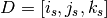
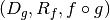
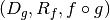
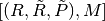
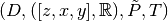

Mathematical formulation of the Coordinate Map¶
Using the CoordinateMap can be a little hard to get used to. For some users, a mathematical description, free of any python syntax and code design and snippets may be helpful. After following through this description, the code design and usage may be clearer.
We return to the normalization example in Use of the Coordinate Map for spatial normalization and try to write it out mathematically. Conceptually, to do normalization, we need to be able to answer each of these three questions:
- Voxel-to-world (subject) Given the subjects’ anatomical image read off the
scanner: which physical location, expressed in
coordinates (
 for subject), corresponds to the voxel of data
? This question is answered by subject_im.coordmap.
The actual function that computes this, i.e that takes 3 floats and returns 3
floats, is subject_im.coordmap.mapping.
for subject), corresponds to the voxel of data
? This question is answered by subject_im.coordmap.
The actual function that computes this, i.e that takes 3 floats and returns 3
floats, is subject_im.coordmap.mapping. - World-to-world (subject to Tailarach) Given a location
in an anatomical image of the subject, where does it
lie in the Tailarach coordinates
 ? This is answered by
the matrix T and knowing that T maps a point in the subject’s world to
Tailarach world. Hence, this question is answered by
subject_world_to_tailarach_world above.
? This is answered by
the matrix T and knowing that T maps a point in the subject’s world to
Tailarach world. Hence, this question is answered by
subject_world_to_tailarach_world above. - Voxel-to-world (Tailarach) Since we want to produce a resampled Image that
has the same shape and coordinate information as atlas_im, we need to know
what location in Tailarach space, (
 for atlas)
corresponds to the voxel
for atlas)
corresponds to the voxel  . This question is answered by
tailarach_cmap.
. This question is answered by
tailarach_cmap.
Each of these three questions are answered by, in code, what we called a class
called CoordinateMap. Mathematically, let’s define a mapping as a tuple
 where
where  is the domain,
is the domain,  is the range and
is a function. It may seem redundant to pair
with
is the range and
is a function. It may seem redundant to pair
with  because a function must surely know its domain and
hence, implicitly, its range. However, we will see that when it comes time to
implement the notion of mapping, the tuple we do use to construct
CoordinateMap is almost, but not quite and, in the tuple we
use, and are not reduntant.
because a function must surely know its domain and
hence, implicitly, its range. However, we will see that when it comes time to
implement the notion of mapping, the tuple we do use to construct
CoordinateMap is almost, but not quite and, in the tuple we
use, and are not reduntant.
Since these mappings are going to be used and called with modules like
numpy, we should restrict our definition a little bit. We assume the
following:
- is isomorphic to one of
 for some
for some  . This isomorphism is determined by a basis
. This isomorphism is determined by a basis
![[u_1,\dots,u_n]](../_images/math/89ecc82a9bcdb8901257208df9e828d62fa83cf6.png) of which maps to
the canonical i-th coordinate vector of whichever of
of which maps to
the canonical i-th coordinate vector of whichever of  . This isomorphism is denoted by .
Strictly speaking, if is isomorphic to then
the term basis is possibly misleading because because it is not a
vector space, but it is a group so we might call the basis a set of
generators instead. In any case, the implication is that whatever properties
the appropriate , so (and
) has as well.
. This isomorphism is denoted by .
Strictly speaking, if is isomorphic to then
the term basis is possibly misleading because because it is not a
vector space, but it is a group so we might call the basis a set of
generators instead. In any case, the implication is that whatever properties
the appropriate , so (and
) has as well. - is similarly isomorphic to one of for some
 with isomorphism
and basis
with isomorphism
and basis ![[v_1,\dots,v_m]](../_images/math/06f2b4a9300126b2cb242292f2cc323e5d00b8c4.png) .
.
Above, and throughout, the brackets “[”,”]” represent things interpretable as python lists, i.e. sequences.
These isomorphisms are just fancy ways of saying that the point
is represented by the 3 real numbers (3,4,5). In this case
the basis is and for any 
We might call the pairs
coordinate systems. Actually, the bases in effect determine the maps
as long as we know which of
we are talking about so in effect,
could be called a coordinate system. This
is how it is implemented in the code with being
replaced by a list of strings naming the basis vectors and  replaced by a builtin
replaced by a builtin numpy.dtype().
In our normalization example, we therefore have 3 mappings:
Voxel-to-world (subject) In standard notation for functions, we can write
The domain is , the range is and the function is
 .
.World-to-world (subject to Tailarach) Again, we can write

The domain is , the range is and the function is .
Voxel-to-world (Tailarach) Again, we can write
The domain is , the range is and the function is .
Note that each of the functions can be, when we know the necessary isomorphisms, thought of as functions from to itself. In fact, that is what we are doing when we write
as a function that takes 3 numbers and gives 3 numbers.
Formally, these functions that take 3 numbers and return 3 numbers can be
written as . When this is
implemented in code, it is actually the functions  we specify, rather then . The functions
have domains and ranges that are just
. We therefore call a coordinate map a tuple
we specify, rather then . The functions
have domains and ranges that are just
. We therefore call a coordinate map a tuple
where are bases for , respectively. It is this object that is implemented in code. There is a simple relationship between mappings and coordinate maps
Because are just functions from to itself, they can all be composed with one another. But, from our description of the functions above, we know that only certain compositions make sense and others do not, such as . Compositions that do make sense include
- which voxel corresponds to the point ?
- which corresponds to the voxel ?
The composition that is used in the normalization example is which is a function
This function, or more correctly its representation that takes
3 floats to 3 floats, is passed directly to
scipy.ndimage.map_coordinates().
Manipulating mappings, coordinate systems and coordinate maps¶
In order to solve our normalization problem, we will definitely need to compose functions. We may want to carry out other formal operations as well. Before describing operations on mappings, we describe the operations you might want to consider on coordinate systems.
Coordinate systems¶
Reorder: This is just a reordering of the basis, i.e.
Product: Topological product of the coordinate systems (with a small twist). Given two coordinate systems the product is represented as
![([u_1,u_2,u_3], \mathbb{R}) \times ([v_1, v_2], \mathbb{Z}) \mapsto ([u_1,u_2,u_3,v_1,v_2], \mathbb{R})`.](../_images/math/b4f57353e6d3175a5703a9487a6bae7b50e078dc.png)
Note that the resulting coordinate system is real valued whereas one of the input coordinate systems was integer valued. We can always embed
 into . If one of them is complex
valued, the resulting coordinate system is complex valued. In the code, this
is handled by attempting to find a safe builtin numpy.dtype for the two (or
more) given coordinate systems.
into . If one of them is complex
valued, the resulting coordinate system is complex valued. In the code, this
is handled by attempting to find a safe builtin numpy.dtype for the two (or
more) given coordinate systems.
Mappings¶
Inverse: Given a mapping if the function
is
invertible, this is just the obvious .Composition: Given two mappings, and
 if then the composition is well
defined and the composition of the mappings is just
.
if then the composition is well
defined and the composition of the mappings is just
.Reorder domain / range: Given a mapping you might want to specify that we’ve changed the domain by changing the ordering of its basis to . Call the new domain . This is represented by the composition of the mappings where and for :
Linearize: Possibly less used, since we know that
must map one of
to one of
 , we might be able
differentiate it at a point , yielding its 1st order Taylor
approximation
, we might be able
differentiate it at a point , yielding its 1st order Taylor
approximationwhich is an affine function, thus creating an affine mapping . Affine functions are discussed in more detail below.
Product: Given two mappings we define their product as the mapping where
Above, we have taken the liberty of expressing the product of the coordinate systems, say,
![D_1=([u_1, \dots, u_n], \mathbb{R}), D_2=([v_1, \dots,
v_m], \mathbb{C})](../_images/math/c10e1ec6b8fd661a15e6daad9b5e88cec3891168.png) as a python addition of lists.
as a python addition of lists.The name product for this operation is not necessarily canonical. If the two coordinate systems are vector spaces and the function is linear, then we might call this map the direct sum because its domain are direct sums of vector spaces. The term product here refers to the fact that the domain and range are true topological products.
Affine mappings¶
An affine mapping is one in which the function is an
affine function. That is, it can be written as f(d) = Ad + b for for some matrix  with entries that are in one
of
with entries that are in one
of  .
.
Strictly speaking, this is a little abuse of notation because  is a
point in not a tuple of real (or integer or complex) numbers. The
matrix represents a linear transformation from to
in a particular choice of bases for and .
is a
point in not a tuple of real (or integer or complex) numbers. The
matrix represents a linear transformation from to
in a particular choice of bases for and .
Let us revisit some of the operations on a mapping as applied to affine
mappings which we write as a tuple with  the
representation of the in homogeneous coordinates.
the
representation of the in homogeneous coordinates.
Inverse: If
is invertible, this is just the tuple
.Composition: The composition of two affine mappings is defined whenever
 and is the tuple
.
and is the tuple
.Reorder domain: A reordering of the domain of an affine mapping can be represented by a permutation matrix
 (in which the last coordinate is unchanged –
remember we are in homogeneous coordinates). Hence a reordering of
to can be represented as . Alternatively, it is
the composition of the affine mappings .
(in which the last coordinate is unchanged –
remember we are in homogeneous coordinates). Hence a reordering of
to can be represented as . Alternatively, it is
the composition of the affine mappings .Reorder range: A reordering of the range can be represented by a permutation matrix . Hence a reordering of
to can be represented as . Alternatively, it is the composition of the affine
mappings .Linearize: Because the mapping
 is already affine, this
leaves it unchanged.
is already affine, this
leaves it unchanged.Product: Given two affine mappings and the product is the tuple
3-dimensional affine mappings¶
For an Image, by far the most common mappings associated to it are affine, and these are usually maps from a real 3-dimensional domain to a real 3-dimensional range. These can be represented by the ubiquitous matrix (the representation of the affine mapping in homogeneous coordinates), along with choices for the axes, i.e. and the spatial coordinates, i.e. .
We will revisit some of the operations on mappings as applied specifically to
3-dimensional affine mappings which we write as a tuple
where is an invertible transformation matrix with
real entries.
- Inverse: Because we have assumed that is invertible this is just tuple .
- Composition: Given two 3-dimensional affine mappings the composition of yields another
3-dimensional affine mapping whenever
 . That is, it yields
. That is, it yields
 .
. - Reorder domain A reordering of the domain can be represented by a
 permutation matrix (with its last coordinate not
changing). Hence the reordering of
permutation matrix (with its last coordinate not
changing). Hence the reordering of ![D=([i,j,k], \mathbb{R})](../_images/math/81ff745c716480c462096906974bc45345ddfb5f.png) to
can be represented as .
to
can be represented as . - Reorder range: A reordering of the range can also be represented by a permutation matrix (with its last coordinate not changing). Hence the reordering of to can be represented as .
- Linearize: Just as for a general affine mapping, this does nothing.
- Product: Because we are dealing with only 3-dimensional mappings here, it is impossible to use the product because that would give a mapping between spaces of dimension higher than 3.
Coordinate maps¶
As noted above coordinate maps are equivalent to mappings through the bijection
So, any manipulations on mappings, affine mappings or 3-dimensional affine mappings can be carried out on coordinate maps, affine coordinate maps or 3-dimensional affine coordinate maps.
Implementation¶
Going from this mathematical description to code is fairly straightforward.
A coordinate system is implemented by the class CoordinateSystem in the module
nipy.core.reference.coordinate_system. Its constructor takes a list of names, naming the basis vectors of the coordinate system and an optional built-in numpy scalar dtype such as np.float32. It has no interesting methods of any kind. But there is a module level function product which implements the notion of the product of coordinate systems.A coordinate map is implemented by the class CoordinateMap in the module
nipy.core.reference.coordinate_map. Its constructor takes two coordinate has a signature (mapping, input_coords(=domain), output_coords(=range)) along with an optional argument inverse_mapping specifying the inverse of mapping. This is a slightly different order from the order of this document. As noted above, the tuple
has some redundancy because the function must
know its domain, and, implicitly its range. In
order of this document. As noted above, the tuple
has some redundancy because the function must
know its domain, and, implicitly its range. In numpy, it is impractical to really pass to the constructor because
would expect something of dtype and should return someting of
dtype . Therefore, mapping is actually a callable that
represents the function  . Of
course, the function can be recovered as = I_R^{-1} circ
tilde{f} I_D`. In code, is roughly equivalent to:
. Of
course, the function can be recovered as = I_R^{-1} circ
tilde{f} I_D`. In code, is roughly equivalent to:>>> from nipy.core.api import CoordinateMap, CoordinateSystem >>> in_cs = CoordinateSystem('ijk', 'voxels') >>> out_cs = CoordinateSystem('xyz', 'mm') >>> map = lambda x : x + 1 >>> coordmap = CoordinateMap(in_cs, out_cs, map) >>> domain = coordmap.function_domain >>> range = coordmap.function_range >>> f_tilde = coordmap.function >>> in_dtype = domain.coord_dtype >>> out_dtype = range.dtype
>>> def f(d): ... return f_tilde(d.view(in_dtype)).view(out_dtype)
The class CoordinateMap has an inverse property and there are module level functions called product, compose, linearize and it has methods reordered_input, reordered_output.
For more detail on the ideas behind the coordmap design, see coordmp-discussion